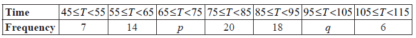
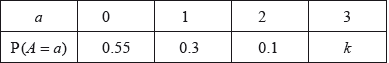
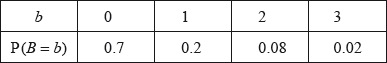
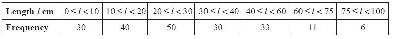
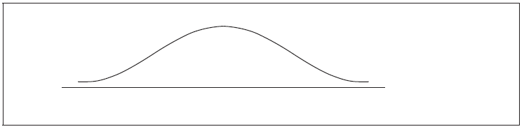
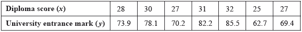
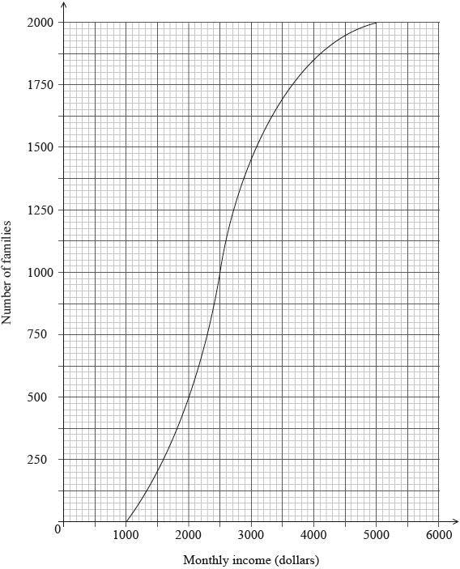

SL Paper 2
The heights of certain plants are normally distributed. The plants are classified into three categories.
The shortest \(12.92\% \) are in category A.
The tallest \(10.38\% \) are in category C.
All the other plants are in category B with heights between \(r{\text{ cm}}\) and \(t{\text{ cm}}\) .
Complete the following diagram to represent this information.

Given that the mean height is \(6.84{\text{ cm}}\) and the standard deviation \(0.25{\text{ cm}}\) , find the value of r and of t.
Let \(A\) and \(B\) be independent events, where \({\text{P}}(A) = 0.3\) and \({\text{P}}(B) = 0.6\).
Find \({\text{P}}(A \cap B)\).
Find \({\text{P}}(A \cup B)\).
On the following Venn diagram, shade the region that represents \(A \cap B'\).

Find \({\text{P}}(A \cap B')\).
The following frequency distribution of marks has mean 4.5.

Find the value of x.
Write down the standard deviation.
Let the random variable X be normally distributed with mean 25, as shown in the following diagram.

The shaded region between 25 and 27 represents \(30\% \) of the distribution.
Find \({\rm{P}}(X > 27)\) .
Find the standard deviation of X .
The following table shows the average weights ( y kg) for given heights (x cm) in a population of men.
| Heights (x cm) | 165 | 170 | 175 | 180 | 185 |
| Weights (y kg) | 67.8 | 70.0 | 72.7 | 75.5 | 77.2 |
The relationship between the variables is modelled by the regression equation \(y = ax + b\).
Write down the value of \(a\) and of \(b\).
The relationship between the variables is modelled by the regression equation \(y = ax + b\).
Hence, estimate the weight of a man whose height is 172 cm.
Write down the correlation coefficient.
State which two of the following describe the correlation between the variables.
| strong | zero | positive |
| negative | no correlation | weak |
A company produces a large number of water containers. Each container has two parts, a bottle and a cap. The bottles and caps are tested to check that they are not defective.
A cap has a probability of 0.012 of being defective. A random sample of 10 caps is selected for inspection.
Find the probability that exactly one cap in the sample will be defective.
The sample of caps passes inspection if at most one cap is defective. Find the probability that the sample passes inspection.
The heights of the bottles are normally distributed with a mean of \(22{\text{ cm}}\) and a standard deviation of \(0.3{\text{ cm}}\).
(i) Copy and complete the following diagram, shading the region representing where the heights are less than \(22.63{\text{ cm}}\).

(ii) Find the probability that the height of a bottle is less than \(22.63{\text{ cm}}\).
(i) A bottle is accepted if its height lies between \(21.37{\text{ cm}}\) and \(22.63{\text{ cm}}\). Find the probability that a bottle selected at random is accepted.
(ii) A sample of 10 bottles passes inspection if all of the bottles in the sample are accepted. Find the probability that the sample passes inspection.
The bottles and caps are manufactured separately. A sample of 10 bottles and a sample of 10 caps are randomly selected for testing. Find the probability that both samples pass inspection.
A box contains a large number of biscuits. The weights of biscuits are normally distributed with mean \(7{\text{ g}}\) and standard deviation \(0.5{\text{ g}}\) .
One biscuit is chosen at random from the box. Find the probability that this biscuit
(i) weighs less than \(8{\text{ g}}\) ;
(ii) weighs between \(6{\text{ g}}\) and \(8{\text{ g}}\) .
Five percent of the biscuits in the box weigh less than d grams.
(i) Copy and complete the following normal distribution diagram, to represent this information, by indicating d, and shading the appropriate region.

(ii) Find the value of d.
The weights of biscuits in another box are normally distributed with mean \(\mu \) and standard deviation \(0.5{\text{ g}}\). It is known that \(20\% \) of the biscuits in this second box weight less than \(5{\text{ g}}\).
Find the value of \(\mu \) .
The histogram below shows the time T seconds taken by 93 children to solve a puzzle.

The following is the frequency distribution for T .

(i) Write down the value of p and of q .
(ii) Write down the median class.
A child is selected at random. Find the probability that the child takes less than 95 seconds to solve the puzzle.
Consider the class interval \(45 \le T < 55\) .
(i) Write down the interval width.
(ii) Write down the mid-interval value.
Hence find an estimate for the
(i) mean;
(ii) standard deviation.
John assumes that T is normally distributed and uses this to estimate the probability that a child takes less than 95 seconds to solve the puzzle.
Find John’s estimate.
Consider the following cumulative frequency table.

Find the value of \(p\) .
Find
(i) the mean;
(ii) the variance.
Each day, a factory recorded the number ( \(x\) ) of boxes it produces and the total production cost ( \(y\) ) dollars. The results for nine days are shown in the following table.

Write down the equation of the regression line of y on x .
Use your regression line from part (a) as a model to answer the following.
Interpret the meaning of
(i) the gradient;
(ii) the y-intercept.
Estimate the cost of producing 60 boxes.
The factory sells the boxes for $19.99 each. Find the least number of boxes that the factory should produce in one day in order to make a profit.
Comment on the appropriateness of using your model to
(i) estimate the cost of producing 5000 boxes;
(ii) estimate the number of boxes produced when the total production cost is $540.
A factory makes switches. The probability that a switch is defective is 0.04. The factory tests a random sample of 100 switches.
Find the mean number of defective switches in the sample.
Find the probability that there are exactly six defective switches in the sample.
Find the probability that there is at least one defective switch in the sample.
A multiple choice test consists of ten questions. Each question has five answers. Only one of the answers is correct. For each question, Jose randomly chooses one of the five answers.
Find the expected number of questions Jose answers correctly.
Find the probability that Jose answers exactly three questions correctly.
Find the probability that Jose answers more than three questions correctly.
The following is a cumulative frequency diagram for the time t, in minutes, taken by 80 students to complete a task.

Write down the median.
Find the interquartile range.
Complete the frequency table below.

The price of a used car depends partly on the distance it has travelled. The following table shows the distance and the price for seven cars on 1 January 2010.

The relationship between \(x\) and \(y\) can be modelled by the regression equation \(y = ax + b\).
On 1 January 2010, Lina buys a car which has travelled \(11\,000{\text{ km}}\).
The price of a car decreases by 5% each year.
Lina will sell her car when its price reaches \(10\,000\) dollars.
(i) Find the correlation coefficient.
(ii) Write down the value of \(a\) and of \(b\).
Use the regression equation to estimate the price of Lina’s car, giving your answer to the nearest 100 dollars.
Calculate the price of Lina’s car after 6 years.
Find the year when Lina sells her car.
A discrete random variable \(X\) has the following probability distribution.

Find the value of \(k\).
Write down \({\text{P}}(X = 2)\).
Find \({\text{P}}(X = 2|X > 0)\).
The maximum temperature \(T\), in degrees Celsius, in a park on six randomly selected days is shown in the following table. The table also shows the number of visitors, \(N\), to the park on each of those six days.

The relationship between the variables can be modelled by the regression equation \(N = aT + b\).
Find the value of \(a\) and of \(b\).
Write down the value of \(r\).
Use the regression equation to estimate the number of visitors on a day when the maximum temperature is 15 °C.
A test has five questions. To pass the test, at least three of the questions must be answered correctly.
The probability that Mark answers a question correctly is \(\frac{1}{5}\) . Let X be the number of questions that Mark answers correctly.
Bill also takes the test. Let Y be the number of questions that Bill answers correctly.
The following table is the probability distribution for Y .

(i) Find E(X ) .
(ii) Find the probability that Mark passes the test.
(i) Show that \(4a + 2b = 0.24\) .
(ii) Given that \({\rm{E}}(Y) = 1\) , find a and b .
Find which student is more likely to pass the test.
The following table shows a probability distribution for the random variable \(X\), where \({\text{E}}(X) = 1.2\).

A bag contains white and blue marbles, with at least three of each colour. Three marbles are drawn from the bag, without replacement. The number of blue marbles drawn is given by the random variable \(X\).
A game is played in which three marbles are drawn from the bag of ten marbles, without replacement. A player wins a prize if three white marbles are drawn.
Find \(q\).
Find \(p\).
Write down the probability of drawing three blue marbles.
Explain why the probability of drawing three white marbles is \(\frac{1}{6}\).
The bag contains a total of ten marbles of which \(w\) are white. Find \(w\).
Grant plays the game until he wins two prizes. Find the probability that he wins his second prize on his eighth attempt.
In a school with 125 girls, each student is tested to see how many sit-up exercises (sit-ups) she can do in one minute. The results are given in the table below.

(i) Write down the value of p.
(ii) Find the value of q.
Find the median number of sit-ups.
Find the mean number of sit-ups.
Consider the following frequency table.

Write down the mode.
Find the value of the range.
Find the mean.
Find the variance.
Paula goes to work three days a week. On any day, the probability that she goes on a red bus is \(\frac{1}{4}\) .
Write down the expected number of times that Paula goes to work on a red bus in one week.
In one week, find the probability that she goes to work on a red bus on exactly two days.
In one week, find the probability that she goes to work on a red bus on at least one day.
Two fair 4-sided dice, one red and one green, are thrown. For each die, the faces are labelled 1, 2, 3, 4. The score for each die is the number which lands face down.
List the pairs of scores that give a sum of 6.
The probability distribution for the sum of the scores on the two dice is shown below.

Find the value of p , of q , and of r .
Fred plays a game. He throws two fair 4-sided dice four times. He wins a prize if the sum is 5 on three or more throws.
Find the probability that Fred wins a prize.
The weights, \(W\), of newborn babies in Australia are normally distributed with a mean 3.41 kg and standard deviation 0.57 kg. A newborn baby has a low birth weight if it weighs less than \(w\) kg.
Given that 5.3% of newborn babies have a low birth weight, find \(w\).
A newborn baby has a low birth weight.
Find the probability that the baby weighs at least 2.15 kg.
Let \(C\) and \(D\) be independent events, with \({\text{P}}(C) = 2k\) and \({\text{P}}(D) = 3{k^2}\), where \(0 < k < 0.5\).
Write down an expression for \({\text{P}}(C \cap D)\) in terms of \(k\).
Given that \({\text{P}}(C \cap D) = 0.162\) find \(k\).
Find \({\text{P}}(C'|D)\).
A factory has two machines, A and B. The number of breakdowns of each machine is independent from day to day.
Let \(A\) be the number of breakdowns of Machine A on any given day. The probability distribution for \(A\) can be modelled by the following table.

Let \(B\) be the number of breakdowns of Machine B on any given day. The probability distribution for \(B\) can be modelled by the following table.

On Tuesday, the factory uses both Machine A and Machine B. The variables \(A\) and \(B\) are independent.
Find \(k\).
(i) A day is chosen at random. Write down the probability that Machine A has no breakdowns.
(ii) Five days are chosen at random. Find the probability that Machine A has no breakdowns on exactly four of these days.
Find \({\text{E}}(B)\).
(i) Find the probability that there are exactly two breakdowns on Tuesday.
(ii) Given that there are exactly two breakdowns on Tuesday, find the probability that both breakdowns are of Machine A.
A fisherman catches 200 fish to sell. He measures the lengths, l cm of these fish, and the results are shown in the frequency table below.

Calculate an estimate for the standard deviation of the lengths of the fish.
A cumulative frequency diagram is given below for the lengths of the fish.

Use the graph to answer the following.
(i) Estimate the interquartile range.
(ii) Given that \(40\% \) of the fish have a length more than \(k{\text{ cm}}\), find the value of k.
In order to sell the fish, the fisherman classifies them as small, medium or large.
Small fish have a length less than \(20{\text{ cm}}\).
Medium fish have a length greater than or equal to \(20{\text{ cm}}\) but less than \(60{\text{ cm}}\).
Large fish have a length greater than or equal to \(60{\text{ cm}}\).
Write down the probability that a fish is small.
The cost of a small fish is \(\$ 4\), a medium fish \(\$ 10\), and a large fish \(\$ 12\).
Copy and complete the following table, which gives a probability distribution for the cost \(\$ X\) .

Find \({\text{E}}(X)\) .
A random variable X is distributed normally with a mean of 20 and variance 9.
Find \({\rm{P}}(X \le 24.5)\) .
Let \({\rm{P}}(X \le k) = 0.85\) .
(i) Represent this information on the following diagram.

(ii) Find the value of k .
Adam is a beekeeper who collected data about monthly honey production in his bee hives. The data for six of his hives is shown in the following table.

The relationship between the variables is modelled by the regression line with equation \(P = aN + b\).
Adam has 200 hives in total. He collects data on the monthly honey production of all the hives. This data is shown in the following cumulative frequency graph.

Adam’s hives are labelled as low, regular or high production, as defined in the following table.

Adam knows that 128 of his hives have a regular production.
Write down the value of \(a\) and of \(b\).
Use this regression line to estimate the monthly honey production from a hive that has 270 bees.
Write down the number of low production hives.
Find the value of \(k\);
Find the number of hives that have a high production.
Adam decides to increase the number of bees in each low production hive. Research suggests that there is a probability of 0.75 that a low production hive becomes a regular production hive. Calculate the probability that 30 low production hives become regular production hives.
The following table shows the sales, \(y\) millions of dollars, of a company, \(x\) years after it opened.

The relationship between the variables is modelled by the regression line with equation \(y = ax + b\).
(i) Find the value of \(a\) and of \(b\).
(ii) Write down the value of \(r\).
Hence estimate the sales in millions of dollars after seven years.
The heights of a group of seven-year-old children are normally distributed with mean \(117{\text{ cm}}\) and standard deviation \(5{\text{ cm}}\). A child is chosen at random from the group.
Find the probability that this child is taller than \(122.5{\text{ cm}}\).
The heights of a group of seven-year-old children are normally distributed with mean \(117{\text{ cm}}\) and standard deviation \(5{\text{ cm}}\). A child is chosen at random from the group.
The probability that this child is shorter than \(k{\text{ cm}}\) is \(0.65\). Find the value of k .
In a large university the probability that a student is left handed is 0.08. A sample of 150 students is randomly selected from the university. Let \(k\) be the expected number of left-handed students in this sample.
Find \(k\).
Hence, find the probability that exactly \(k\) students are left handed;
Hence, find the probability that fewer than \(k\) students are left handed.
Ten students were surveyed about the number of hours, \(x\), they spent browsing the Internet during week 1 of the school year. The results of the survey are given below.
\[\sum\limits_{i = 1}^{10} {{x_i} = 252,{\text{ }}\sigma = 5{\text{ and median}} = 27.} \]
During week 4, the survey was extended to all 200 students in the school. The results are shown in the cumulative frequency graph:

Find the mean number of hours spent browsing the Internet.
During week 2, the students worked on a major project and they each spent an additional five hours browsing the Internet. For week 2, write down
(i) the mean;
(ii) the standard deviation.
During week 3 each student spent 5% less time browsing the Internet than during week 1. For week 3, find
(i) the median;
(ii) the variance.
(i) Find the number of students who spent between 25 and 30 hours browsing the Internet.
(ii) Given that 10% of the students spent more than k hours browsing the Internet, find the maximum value of \(k\).
A random variable X is distributed normally with mean 450. It is known that \({\rm{P}}(X > a) = 0.27\) .
Represent all this information on the following diagram.

Given that the standard deviation is 20, find a . Give your answer correct to the nearest whole number.
The weights of fish in a lake are normally distributed with a mean of \(760\) g and standard deviation \(\sigma \). It is known that \(78.87\% \) of the fish have weights between \(705\) g and \(815\) g.
(i) Write down the probability that a fish weighs more than \(760\) g.
(ii) Find the probability that a fish weighs less than \(815\) g.
(i) Write down the standardized value for \(815\) g.
(ii) Hence or otherwise, find \(\sigma \).
A fishing contest takes place in the lake. Small fish, called tiddlers, are thrown back into the lake. The maximum weight of a tiddler is \(1.5\) standard deviations below the mean.
Find the maximum weight of a tiddler.
A fish is caught at random. Find the probability that it is a tiddler.
\(25\% \) of the fish in the lake are salmon. \(10\% \) of the salmon are tiddlers. Given that a fish caught at random is a tiddler, find the probability that it is a salmon.
A competition consists of two independent events, shooting at 100 targets and running for one hour.
The number of targets a contestant hits is the \(S\) score. The \(S\) scores are normally distributed with mean 65 and standard deviation 10.
The distance in km that a contestant runs in one hour is the \(R\) score. The \(R\) scores are normally distributed with mean 12 and standard deviation 2.5. The \(R\) score is independent of the \(S\) score.
Contestants are disqualified if their \(S\) score is less than 50 and their \(R\) score is less than \(x\) km.
A contestant is chosen at random. Find the probability that their \(S\) score is less than 50.
Given that 1% of the contestants are disqualified, find the value of \(x\).
The weights, in grams, of oranges grown in an orchard, are normally distributed with a mean of 297 g. It is known that 79 % of the oranges weigh more than 289 g and 9.5 % of the oranges weigh more than 310 g.
The weights of the oranges have a standard deviation of σ.
The grocer at a local grocery store will buy the oranges whose weights exceed the 35th percentile.
The orchard packs oranges in boxes of 36.
Find the probability that an orange weighs between 289 g and 310 g.
Find the standardized value for 289 g.
Hence, find the value of σ.
To the nearest gram, find the minimum weight of an orange that the grocer will buy.
Find the probability that the grocer buys more than half the oranges in a box selected at random.
The grocer selects two boxes at random.
Find the probability that the grocer buys more than half the oranges in each box.
The weights in grams of 80 rats are shown in the following cumulative frequency diagram.

Do NOT write solutions on this page.
Write down the median weight of the rats.
Find the percentage of rats that weigh 70 grams or less.
The same data is presented in the following table.
| Weights \(w\) grams |
\(0 \leqslant w \leqslant 30\) | \(30 < w \leqslant 60\) | \(60 < w \leqslant 90\) | \(90 < w \leqslant 120\) |
| Frequency | \(p\) | \(45\) | \(q\) | \(5\) |
Write down the value of \(p\).
The same data is presented in the following table.
| Weights \(w\) grams |
\(0 \leqslant w \leqslant 30\) | \(30 < w \leqslant 60\) | \(60 < w \leqslant 90\) | \(90 < w \leqslant 120\) |
| Frequency | \(p\) | \(45\) | \(q\) | \(5\) |
Find the value of \(q\).
The same data is presented in the following table.
| Weights \(w\) grams |
\(0 \leqslant w \leqslant 30\) | \(30 < w \leqslant 60\) | \(60 < w \leqslant 90\) | \(90 < w \leqslant 120\) |
| Frequency | \(p\) | \(45\) | \(q\) | \(5\) |
Use the values from the table to estimate the mean and standard deviation of the weights.
Assume that the weights of these rats are normally distributed with the mean and standard deviation estimated in part (c).
Find the percentage of rats that weigh 70 grams or less.
Assume that the weights of these rats are normally distributed with the mean and standard deviation estimated in part (c).
A sample of five rats is chosen at random. Find the probability that at most three rats weigh 70 grams or less.
A factory makes lamps. The probability that a lamp is defective is 0.05. A random sample of 30 lamps is tested.
Find the probability that there is at least one defective lamp in the sample.
A factory makes lamps. The probability that a lamp is defective is 0.05. A random sample of 30 lamps is tested.
Given that there is at least one defective lamp in the sample, find the probability that there are at most two defective lamps.
A random variable X is distributed normally with mean 450 and standard deviation 20.
Find \({\rm{P}}(X \le 475)\) .
Given that \({\rm{P}}(X > a) = 0.27\) , find \(a\).
A forest has a large number of tall trees. The heights of the trees are normally distributed with a mean of \(53\) metres and a standard deviation of \(8\) metres. Trees are classified as giant trees if they are more than \(60\) metres tall.
A tree is selected at random from the forest.
Find the probability that this tree is a giant.
A tree is selected at random from the forest.
Given that this tree is a giant, find the probability that it is taller than \(70\) metres.
Two trees are selected at random. Find the probability that they are both giants.
\(100\) trees are selected at random.
Find the expected number of these trees that are giants.
\(100\) trees are selected at random.
Find the probability that at least \(25\) of these trees are giants.
Evan likes to play two games of chance, A and B.
For game A, the probability that Evan wins is 0.9. He plays game A seven times.
For game B, the probability that Evan wins is p . He plays game B seven times.
Find the probability that he wins exactly four games.
Write down an expression, in terms of p , for the probability that he wins exactly four games.
Hence, find the values of p such that the probability that he wins exactly four games is 0.15.
A company makes containers of yogurt. The volume of yogurt in the containers is normally distributed with a mean of \(260\) ml and standard deviation of \(6\) ml.
A container which contains less than \(250\) ml of yogurt is underfilled.
A container is chosen at random. Find the probability that it is underfilled.
The company decides that the probability of a container being underfilled should be reduced to \(0.02\). It decreases the standard deviation to \(\sigma \) and leaves the mean unchanged.
Find \(\sigma \).
The company changes to the new standard deviation, \(\sigma \), and leaves the mean unchanged.
A container is chosen at random for inspection. It passes inspection if its volume of yogurt is between \(250\) and \(271\) ml.
(i) Find the probability that it passes inspection.
(ii) Given that the container is not underfilled, find the probability that it passes inspection.
A sample of \(50\) containers is chosen at random. Find the probability that \(48\) or more of the containers pass inspection.
Samantha goes to school five days a week. When it rains, the probability that she goes to school by bus is 0.5. When it does not rain, the probability that she goes to school by bus is 0.3. The probability that it rains on any given day is 0.2.
On a randomly selected school day, find the probability that Samantha goes to school by bus.
Given that Samantha went to school by bus on Monday, find the probability that it was raining.
In a randomly chosen school week, find the probability that Samantha goes to school by bus on exactly three days.
After \(n\) school days, the probability that Samantha goes to school by bus at least once is greater than \(0.95\). Find the smallest value of \(n\).
A standard die is rolled 36 times. The results are shown in the following table.

Write down the standard deviation.
Write down the median score.
Find the interquartile range.
The following table shows the average number of hours per day spent watching television by seven mothers and each mother’s youngest child.

The relationship can be modelled by the regression line with equation \(y = ax + b\).
(i) Find the correlation coefficient.
(ii) Write down the value of \(a\) and of \(b\).
Elizabeth watches television for an average of \(3.7\) hours per day.
Use your regression line to predict the average number of hours of television watched per day by Elizabeth’s youngest child. Give your answer correct to one decimal place.
The probability of obtaining “tails” when a biased coin is tossed is \(0.57\). The coin is tossed ten times. Find the probability of obtaining at least four tails.
The probability of obtaining “tails” when a biased coin is tossed is 0.57. The coin is tossed ten times. Find the probability of obtaining the fourth tail on the tenth toss.
The following table shows the mean weight, y kg , of children who are x years old.
![]()
The relationship between the variables is modelled by the regression line with equation \(y = ax + b\).
Find the value of a and of b.
Write down the correlation coefficient.
Use your equation to estimate the mean weight of a child that is 1.95 years old.
The weights of players in a sports league are normally distributed with a mean of \(76.6{\text{ kg}}\), (correct to three significant figures). It is known that \(80\% \) of the players have weights between \(68{\text{ kg}}\) and \(82{\text{ kg}}\). The probability that a player weighs less than \(68{\text{ kg}}\) is 0.05.
Find the probability that a player weighs more than \(82{\text{ kg}}\).
(i) Write down the standardized value, z, for \(68{\text{ kg}}\).
(ii) Hence, find the standard deviation of weights.
To take part in a tournament, a player’s weight must be within 1.5 standard deviations of the mean.
(i) Find the set of all possible weights of players that take part in the tournament.
(ii) A player is selected at random. Find the probability that the player takes part in the tournament.
Of the players in the league, \(25\% \) are women. Of the women, \(70\% \) take part in the tournament.
Given that a player selected at random takes part in the tournament, find the probability that the selected player is a woman.
The probability of obtaining heads on a biased coin is 0.18. The coin is tossed seven times.
Find the probability of obtaining exactly two heads.
Find the probability of obtaining at least two heads.
The probability of obtaining heads on a biased coin is 0.4. The coin is tossed 600 times.
(i) Write down the mean number of heads.
(ii) Find the standard deviation of the number of heads.
Find the probability that the number of heads obtained is less than one standard deviation away from the mean.
A random variable \(X\) is normally distributed with \(\mu = 150\) and \(\sigma = 10\) .
Find the interquartile range of \(X\) .
The mass \(M\) of a decaying substance is measured at one minute intervals. The points \((t,{\text{ }}\ln M)\) are plotted for \(0 \leqslant t \leqslant 10\), where \(t\) is in minutes. The line of best fit is drawn. This is shown in the following diagram.

The correlation coefficient for this linear model is \(r = - 0.998\).
State two words that describe the linear correlation between \(\ln M\) and \(t\).
The equation of the line of best fit is \(\ln M = - 0.12t + 4.67\). Given that \(M = a \times {b^t}\), find the value of \(b\).
In any given season, a soccer team plays 65 % of their games at home.
When the team plays at home, they win 83 % of their games.
When they play away from home, they win 26 % of their games.
The team plays one game.
Find the probability that the team wins the game.
If the team does not win the game, find the probability that the game was played at home.
A biased four-sided die is rolled. The following table gives the probability of each score.
![]()
Find the value of k.
Calculate the expected value of the score.
The die is rolled 80 times. On how many rolls would you expect to obtain a three?
A random variable \(X\) is normally distributed with mean, \(\mu \). In the following diagram, the shaded region between 9 and \(\mu \) represents 30% of the distribution.

The standard deviation of \(X\) is 2.1.
The random variable \(Y\) is normally distributed with mean \(\lambda \) and standard deviation 3.5. The events \(X > 9\) and \(Y > 9\) are independent, and \(P\left( {(X > 9) \cap (Y > 9)} \right) = 0.4\).
Find \({\text{P}}(X < 9)\).
Find the value of \(\mu \).
Find \(\lambda \).
Given that \(Y > 9\), find \({\text{P}}(Y < 13)\).
Consider the independent events A and B . Given that \({\rm{P}}(B) = 2{\rm{P}}(A)\) , and \({\rm{P}}(A \cup B) = 0.52\) , find \({\rm{P}}(B)\) .
A company uses two machines, A and B, to make boxes. Machine A makes \(60\% \) of the boxes.
\(80\% \) of the boxes made by machine A pass inspection.
\(90\% \) of the boxes made by machine B pass inspection.
A box is selected at random.
Find the probability that it passes inspection.
The company would like the probability that a box passes inspection to be 0.87.
Find the percentage of boxes that should be made by machine B to achieve this.
The following table shows a probability distribution for the random variable \(X\), where \({\text{E}}(X) = 1.2\).
A bag contains white and blue marbles, with at least three of each colour. Three marbles are drawn from the bag, without replacement. The number of blue marbles drawn is given by the random variable \(X\).
A game is played in which three marbles are drawn from the bag of ten marbles, without replacement. A player wins a prize if three white marbles are drawn.
Jill plays the game nine times. Find the probability that she wins exactly two prizes.
A random variable \(X\) is distributed normally with a mean of 20 and standard deviation of 4.
On the following diagram, shade the region representing \({\text{P}}(X \leqslant 25)\).

Write down \({\text{P}}(X \leqslant 25)\), correct to two decimal places.
Let \({\text{P}}(X \leqslant c) = 0.7\). Write down the value of \(c\).
A van can take either Route A or Route B for a particular journey.
If Route A is taken, the journey time may be assumed to be normally distributed with mean 46 minutes and a standard deviation 10 minutes.
If Route B is taken, the journey time may be assumed to be normally distributed with mean \(\mu \) minutes and standard deviation 12 minutes.
For Route A, find the probability that the journey takes more than \(60\) minutes.
For Route B, the probability that the journey takes less than \(60\) minutes is \(0.85\).
Find the value of \(\mu \) .
The van sets out at 06:00 and needs to arrive before 07:00.
(i) Which route should it take?
(ii) Justify your answer.
On five consecutive days the van sets out at 06:00 and takes Route B. Find the probability that
(i) it arrives before 07:00 on all five days;
(ii) it arrives before 07:00 on at least three days.
Jan plays a game where she tosses two fair six-sided dice. She wins a prize if the sum of her scores is 5.
Jan tosses the two dice once. Find the probability that she wins a prize.
Jan tosses the two dice 8 times. Find the probability that she wins 3 prizes.
The following table shows the probability distribution of a discrete random variable X.

Find the value of k.
Find the expected value of X.
The scores of a test given to students are normally distributed with a mean of 21. \(80\% \) of the students have scores less than 23.7.
Find the standard deviation of the scores.
A student is chosen at random. This student has the same probability of having a score less than 25.4 as having a score greater than b.
(i) Find the probability the student has a score less than 25.4.
(ii) Find the value of b.
At a large school, students are required to learn at least one language, Spanish or French. It is known that \(75\% \) of the students learn Spanish, and \(40\% \) learn French.
Find the percentage of students who learn both Spanish and French.
At a large school, students are required to learn at least one language, Spanish or French. It is known that \(75\% \) of the students learn Spanish, and \(40\% \) learn French.
Find the percentage of students who learn Spanish, but not French.
At a large school, students are required to learn at least one language, Spanish or French. It is known that \(75\% \) of the students learn Spanish, and \(40\% \) learn French.
At this school, \(52\% \) of the students are girls, and \(85\% \) of the girls learn Spanish.
A student is chosen at random. Let G be the event that the student is a girl, and let S be the event that the student learns Spanish.
(i) Find \({\rm{P}}(G \cap S)\) .
(ii) Show that G and S are not independent.
At a large school, students are required to learn at least one language, Spanish or French. It is known that \(75\% \) of the students learn Spanish, and \(40\% \) learn French.
At this school, \(52\% \) of the students are girls, and \(85\% \) of the girls learn Spanish.
A boy is chosen at random. Find the probability that he learns Spanish.
A bag contains four gold balls and six silver balls.
Two balls are drawn at random from the bag, with replacement. Let \(X\) be the number of gold balls drawn from the bag.
Fourteen balls are drawn from the bag, with replacement.
(i) Find \({\rm{P}}(X = 0)\) .
(ii) Find \({\rm{P}}(X = 1)\) .
(iii) Hence, find \({\rm{E}}(X)\) .
Hence, find \({\rm{E}}(X)\) .
Find the probability that exactly five of the balls are gold.
Find the probability that at most five of the balls are gold.
Given that at most five of the balls are gold, find the probability that exactly five of the balls are gold. Give the answer correct to two decimal places.
Two events \(A\) and \(B\) are such that \({\text{P}}(A) = 0.2\) and \({\text{P}}(A \cup B) = 0.5\).
Given that \(A\) and \(B\) are mutually exclusive, find \({\text{P}}(B)\).
Given that \(A\) and \(B\) are independent, find \({\text{P}}(B)\).
The following table shows the Diploma score \(x\) and university entrance mark \(y\) for seven IB Diploma students.

Find the correlation coefficient.
The relationship can be modelled by the regression line with equation \(y = ax + b\).
Write down the value of \(a\) and of \(b\).
Rita scored a total of \(26\) in her IB Diploma.
Use your regression line to estimate Rita’s university entrance mark.
The cumulative frequency curve below represents the heights of 200 sixteen-year-old boys.

Use the graph to answer the following.
Write down the median value.
A boy is chosen at random. Find the probability that he is shorter than \(161{\text{ cm}}\).
Given that \(82\% \) of the boys are taller than \(h{\text{ cm}}\), find h .
The following cumulative frequency graph shows the monthly income, \(I\) dollars, of \(2000\) families.

Find the median monthly income.
(i) Write down the number of families who have a monthly income of \(2000\) dollars or less.
(ii) Find the number of families who have a monthly income of more than \(4000\) dollars.
The \(2000\) families live in two different types of housing. The following table gives information about the number of families living in each type of housing and their monthly income \(I\).

Find the value of \(p\).
A family is chosen at random.
(i) Find the probability that this family lives in an apartment.
(ii) Find the probability that this family lives in an apartment, given that its monthly income is greater than \(4000\) dollars.
Estimate the mean monthly income for families living in a villa.
The following table gives the examination grades for 120 students.

Find the value of
(i) p ;
(ii) q .
Find the mean grade.
Write down the standard deviation.
The masses of watermelons grown on a farm are normally distributed with a mean of \(10\) kg.
The watermelons are classified as small, medium or large.
A watermelon is small if its mass is less than \(4\) kg. Five percent of the watermelons are classified as small.
Find the standard deviation of the masses of the watermelons.
The following table shows the percentages of small, medium and large watermelons grown on the farm.

A watermelon is large if its mass is greater than \(w\) kg.
Find the value of \(w\).
All the medium and large watermelons are delivered to a grocer.
The grocer selects a watermelon at random from this delivery. Find the probability that it is medium.
All the medium and large watermelons are delivered to a grocer.
The grocer sells all the medium watermelons for $1.75 each, and all the large watermelons for $3.00 each. His costs on this delivery are $300, and his total profit is $150. Find the number of watermelons in the delivery.
The following table shows the amount of fuel (\(y\) litres) used by a car to travel certain distances (\(x\) km).
| Distance (x km) | 40 | 75 | 120 | 150 | 195 |
| Amount of fuel (y litres) | 3.6 | 6.5 | 9.9 | 13.1 | 16.2 |
This data can be modelled by the regression line with equation \(y = ax + b\).
Write down the value of \(a\) and of \(b\).
Explain what the gradient \(a\) represents.
Use the model to estimate the amount of fuel the car would use if it is driven \(110\) km.
The random variable \(X\) is normally distributed with mean \(20\) and standard deviation \(5\).
Find \({\rm{P}}(X \le 22.9)\) .
Given that \({\rm{P}}(X < k) = 0.55\) , find the value of \(k\) .
The following table shows values of ln x and ln y.
![]()
The relationship between ln x and ln y can be modelled by the regression equation ln y = a ln x + b.
Find the value of a and of b.
Use the regression equation to estimate the value of y when x = 3.57.
The relationship between x and y can be modelled using the formula y = kxn, where k ≠ 0 , n ≠ 0 , n ≠ 1.
By expressing ln y in terms of ln x, find the value of n and of k.
An environmental group records the numbers of coyotes and foxes in a wildlife reserve after \(t\) years, starting on 1 January 1995.
Let \(c\) be the number of coyotes in the reserve after \(t\) years. The following table shows the number of coyotes after \(t\) years.

The relationship between the variables can be modelled by the regression equation \(c = at + b\).
Find the value of \(a\) and of \(b\).
Use the regression equation to estimate the number of coyotes in the reserve when \(t = 7\).
Let \(f\) be the number of foxes in the reserve after \(t\) years. The number of foxes can be modelled by the equation \(f = \frac{{2000}}{{1 + 99{{\text{e}}^{ - kt}}}}\), where \(k\) is a constant.
Find the number of foxes in the reserve on 1 January 1995.
After five years, there were 64 foxes in the reserve. Find \(k\).
During which year were the number of coyotes the same as the number of foxes?
Let \(f(x) = {{\text{e}}^{0.5x}} - 2\).
For the graph of f:
(i) write down the \(y\)-intercept;
(ii) find the \(x\)-intercept;
(iii) write down the equation of the horizontal asymptote.
On the following grid, sketch the graph of \(f\), for \( - 4 \leqslant x \leqslant 4\).

The following table shows the probability distribution of a discrete random variable \(X\).

Find the value of \(k\).
Find \({\text{E}}(X)\).
The following diagram is a box and whisker plot for a set of data.

The interquartile range is 20 and the range is 40.
Write down the median value.
Find the value of
(i) \(a\) ;
(ii) \(b\) .
A jar contains 5 red discs, 10 blue discs and \(m\) green discs. A disc is selected at random and replaced. This process is performed four times.
Write down the probability that the first disc selected is red.
Let \(X\) be the number of red discs selected. Find the smallest value of \(m\) for which \({\text{Var}}(X{\text{ }}) < 0.6\).
Two events A and B are such that P(A) = 0.62 and P\(\left( {A \cap B} \right)\) = 0.18.
Find P(A ∩ B′ ).
Given that P((A ∪ B)′ ) = 0.19, find P(A | B′ ).
The heights of adult males in a country are normally distributed with a mean of 180 cm and a standard deviation of \(\sigma {\text{ cm}}\). 17% of these men are shorter than 168 cm. 80% of them have heights between \((192 - h){\text{ cm}}\) and 192 cm.
Find the value of \(h\).
The time taken for a student to complete a task is normally distributed with a mean of \(20\) minutes and a standard deviation of \(1.25\) minutes.
A student is selected at random. Find the probability that the student completes the task in less than \(21.8\) minutes.
The probability that a student takes between \(k\) and \(21.8\) minutes is \(0.3\). Find the value of \(k\).
In a large city, the time taken to travel to work is normally distributed with mean \(\mu \) and standard deviation \(\sigma \) . It is found that \(4\% \) of the population take less than 5 minutes to get to work, and \(70\% \) take less than 25 minutes.
Find the value of \(\mu \) and of \(\sigma \) .
A box holds 240 eggs. The probability that an egg is brown is 0.05.
Find the expected number of brown eggs in the box.
Find the probability that there are 15 brown eggs in the box.
Find the probability that there are at least 10 brown eggs in the box.
The mass M of apples in grams is normally distributed with mean μ. The following table shows probabilities for values of M.
![]()
The apples are packed in bags of ten.
Any apples with a mass less than 95 g are classified as small.
Write down the value of k.
Show that μ = 106.
Find P(M < 95) .
Find the probability that a bag of apples selected at random contains at most one small apple.
Find the expected number of bags in this crate that contain at most one small apple.
Find the probability that at least 48 bags in this crate contain at most one small apple.
A Ferris wheel with diameter \(122\) metres rotates clockwise at a constant speed. The wheel completes \(2.4\) rotations every hour. The bottom of the wheel is \(13\) metres above the ground.

A seat starts at the bottom of the wheel.
After t minutes, the height \(h\) metres above the ground of the seat is given by\[h = 74 + a\cos bt {\rm{ .}}\]
Find the maximum height above the ground of the seat.
(i) Show that the period of \(h\) is \(25\) minutes.
(ii) Write down the exact value of \(b\) .
(b) (i) Show that the period of \(h\) is \(25\) minutes.
(ii) Write down the exact value of \(b\) .
(c) Find the value of \(a\) .
(d) Sketch the graph of \(h\) , for \(0 \le t \le 50\) .
Find the value of \(a\) .
Sketch the graph of \(h\) , for \(0 \le t \le 50\) .
In one rotation of the wheel, find the probability that a randomly selected seat is at least \(105\) metres above the ground.